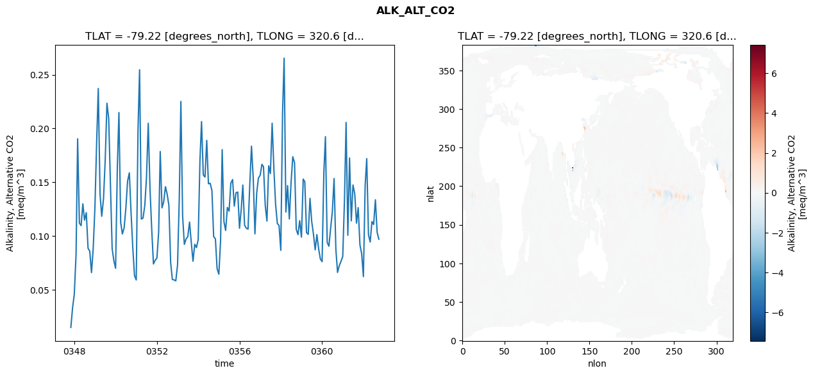
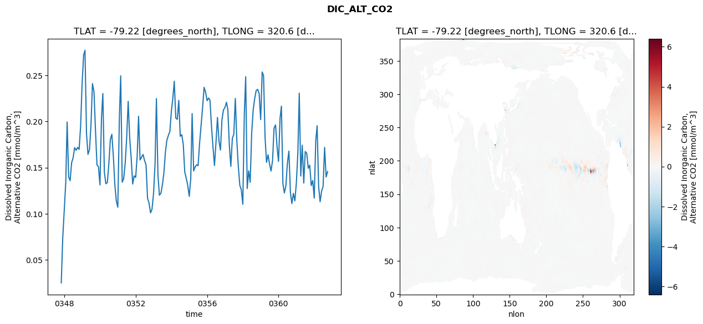
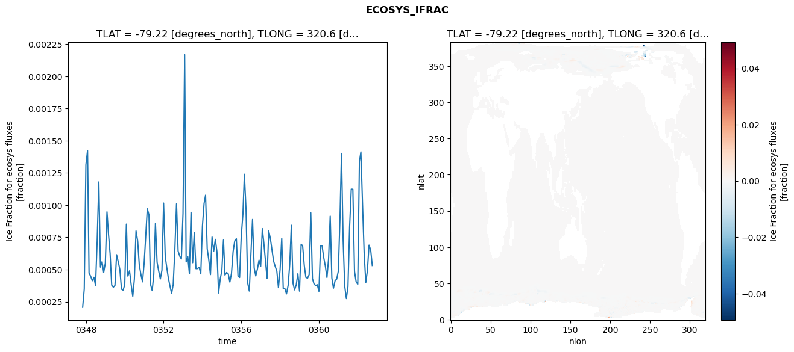

glb-dor_North_Atlantic_basin_014_1999-10-01_00059#
Simulation details#
Case: smyle.cdr-atlas-v0.glb-dor_North_Atlantic_basin_014_1999-10-01_00059.001
Basin: North_Atlantic_basin
Polygon: 14.0
Start date: 1999-10
Show code cell source Hide code cell source
import xarray as xr
import matplotlib.pyplot as plt
Show code cell source Hide code cell source
zarr_store = "/path/to/zarr/store"
# Parameters
zarr_store = "/global/cfs/projectdirs/m4746/Projects/Ocean-CDR-Atlas-v0/data/validation/smyle.cdr-atlas-v0.glb-dor_North_Atlantic_basin_014_1999-10-01_00059.001.validation.zarr"
Show code cell source Hide code cell source
%%time
ds_o = xr.open_zarr(zarr_store).compute()
ds_o
CPU times: user 693 ms, sys: 417 ms, total: 1.11 s
Wall time: 1.33 s
<xarray.Dataset> Size: 2MB
Dimensions: (nlat: 384, nlon: 320, time: 180)
Coordinates:
TLAT float64 8B -79.22
TLONG float64 8B 320.6
ULAT float64 8B -78.95
ULONG float64 8B 321.1
* time (time) object 1kB 0347-11-01 00:00:00 ... 0362-10-01 0...
z_t float32 4B 500.0
Dimensions without coordinates: nlat, nlon
Data variables:
ALK_ALT_CO2_diff (nlat, nlon) float32 492kB nan nan nan ... nan nan nan
ALK_ALT_CO2_rmse (time) float64 1kB 0.015 0.03292 ... 0.1034 0.09698
DIC_ALT_CO2_diff (nlat, nlon) float32 492kB nan nan nan ... nan nan nan
DIC_ALT_CO2_rmse (time) float64 1kB 0.02518 0.0736 ... 0.1398 0.1457
ECOSYS_IFRAC_diff (nlat, nlon) float32 492kB nan nan nan ... nan nan nan
ECOSYS_IFRAC_rmse (time) float64 1kB 0.0002069 0.0003495 ... 0.0005313
FG_ALT_CO2_diff (nlat, nlon) float32 492kB nan nan nan ... nan nan nan
FG_ALT_CO2_rmse (time) float64 1kB 3.542e-06 9.6e-06 ... 1.702e-05xarray.Dataset
- nlat: 384
- nlon: 320
- time: 180
- TLAT()float64-79.22
- long_name :
- array of t-grid latitudes
- units :
- degrees_north
array(-79.22052261)
- TLONG()float64320.6
- long_name :
- array of t-grid longitudes
- units :
- degrees_east
array(320.56250892)
- ULAT()float64-78.95
- long_name :
- array of u-grid latitudes
- units :
- degrees_north
array(-78.95289509)
- ULONG()float64321.1
- long_name :
- array of u-grid longitudes
- units :
- degrees_east
array(321.12500894)
- time(time)object0347-11-01 00:00:00 ... 0362-10-...
- bounds :
- time_bound
- long_name :
- time
array([cftime.DatetimeNoLeap(347, 11, 1, 0, 0, 0, 0, has_year_zero=True), cftime.DatetimeNoLeap(347, 12, 1, 0, 0, 0, 0, has_year_zero=True), cftime.DatetimeNoLeap(348, 1, 1, 0, 0, 0, 0, has_year_zero=True), cftime.DatetimeNoLeap(348, 2, 1, 0, 0, 0, 0, has_year_zero=True), cftime.DatetimeNoLeap(348, 3, 1, 0, 0, 0, 0, has_year_zero=True), cftime.DatetimeNoLeap(348, 4, 1, 0, 0, 0, 0, has_year_zero=True), cftime.DatetimeNoLeap(348, 5, 1, 0, 0, 0, 0, has_year_zero=True), cftime.DatetimeNoLeap(348, 6, 1, 0, 0, 0, 0, has_year_zero=True), cftime.DatetimeNoLeap(348, 7, 1, 0, 0, 0, 0, has_year_zero=True), cftime.DatetimeNoLeap(348, 8, 1, 0, 0, 0, 0, has_year_zero=True), cftime.DatetimeNoLeap(348, 9, 1, 0, 0, 0, 0, has_year_zero=True), cftime.DatetimeNoLeap(348, 10, 1, 0, 0, 0, 0, has_year_zero=True), cftime.DatetimeNoLeap(348, 11, 1, 0, 0, 0, 0, has_year_zero=True), cftime.DatetimeNoLeap(348, 12, 1, 0, 0, 0, 0, has_year_zero=True), cftime.DatetimeNoLeap(349, 1, 1, 0, 0, 0, 0, has_year_zero=True), cftime.DatetimeNoLeap(349, 2, 1, 0, 0, 0, 0, has_year_zero=True), cftime.DatetimeNoLeap(349, 3, 1, 0, 0, 0, 0, has_year_zero=True), cftime.DatetimeNoLeap(349, 4, 1, 0, 0, 0, 0, has_year_zero=True), cftime.DatetimeNoLeap(349, 5, 1, 0, 0, 0, 0, has_year_zero=True), cftime.DatetimeNoLeap(349, 6, 1, 0, 0, 0, 0, has_year_zero=True), cftime.DatetimeNoLeap(349, 7, 1, 0, 0, 0, 0, has_year_zero=True), cftime.DatetimeNoLeap(349, 8, 1, 0, 0, 0, 0, has_year_zero=True), cftime.DatetimeNoLeap(349, 9, 1, 0, 0, 0, 0, has_year_zero=True), cftime.DatetimeNoLeap(349, 10, 1, 0, 0, 0, 0, has_year_zero=True), cftime.DatetimeNoLeap(349, 11, 1, 0, 0, 0, 0, has_year_zero=True), cftime.DatetimeNoLeap(349, 12, 1, 0, 0, 0, 0, has_year_zero=True), cftime.DatetimeNoLeap(350, 1, 1, 0, 0, 0, 0, has_year_zero=True), cftime.DatetimeNoLeap(350, 2, 1, 0, 0, 0, 0, has_year_zero=True), cftime.DatetimeNoLeap(350, 3, 1, 0, 0, 0, 0, has_year_zero=True), cftime.DatetimeNoLeap(350, 4, 1, 0, 0, 0, 0, has_year_zero=True), cftime.DatetimeNoLeap(350, 5, 1, 0, 0, 0, 0, has_year_zero=True), cftime.DatetimeNoLeap(350, 6, 1, 0, 0, 0, 0, has_year_zero=True), cftime.DatetimeNoLeap(350, 7, 1, 0, 0, 0, 0, has_year_zero=True), cftime.DatetimeNoLeap(350, 8, 1, 0, 0, 0, 0, has_year_zero=True), cftime.DatetimeNoLeap(350, 9, 1, 0, 0, 0, 0, has_year_zero=True), cftime.DatetimeNoLeap(350, 10, 1, 0, 0, 0, 0, has_year_zero=True), cftime.DatetimeNoLeap(350, 11, 1, 0, 0, 0, 0, has_year_zero=True), cftime.DatetimeNoLeap(350, 12, 1, 0, 0, 0, 0, has_year_zero=True), cftime.DatetimeNoLeap(351, 1, 1, 0, 0, 0, 0, has_year_zero=True), cftime.DatetimeNoLeap(351, 2, 1, 0, 0, 0, 0, has_year_zero=True), cftime.DatetimeNoLeap(351, 3, 1, 0, 0, 0, 0, has_year_zero=True), cftime.DatetimeNoLeap(351, 4, 1, 0, 0, 0, 0, has_year_zero=True), cftime.DatetimeNoLeap(351, 5, 1, 0, 0, 0, 0, has_year_zero=True), cftime.DatetimeNoLeap(351, 6, 1, 0, 0, 0, 0, has_year_zero=True), cftime.DatetimeNoLeap(351, 7, 1, 0, 0, 0, 0, has_year_zero=True), cftime.DatetimeNoLeap(351, 8, 1, 0, 0, 0, 0, has_year_zero=True), cftime.DatetimeNoLeap(351, 9, 1, 0, 0, 0, 0, has_year_zero=True), cftime.DatetimeNoLeap(351, 10, 1, 0, 0, 0, 0, has_year_zero=True), cftime.DatetimeNoLeap(351, 11, 1, 0, 0, 0, 0, has_year_zero=True), cftime.DatetimeNoLeap(351, 12, 1, 0, 0, 0, 0, has_year_zero=True), cftime.DatetimeNoLeap(352, 1, 1, 0, 0, 0, 0, has_year_zero=True), cftime.DatetimeNoLeap(352, 2, 1, 0, 0, 0, 0, has_year_zero=True), cftime.DatetimeNoLeap(352, 3, 1, 0, 0, 0, 0, has_year_zero=True), cftime.DatetimeNoLeap(352, 4, 1, 0, 0, 0, 0, has_year_zero=True), cftime.DatetimeNoLeap(352, 5, 1, 0, 0, 0, 0, has_year_zero=True), cftime.DatetimeNoLeap(352, 6, 1, 0, 0, 0, 0, has_year_zero=True), cftime.DatetimeNoLeap(352, 7, 1, 0, 0, 0, 0, has_year_zero=True), cftime.DatetimeNoLeap(352, 8, 1, 0, 0, 0, 0, has_year_zero=True), cftime.DatetimeNoLeap(352, 9, 1, 0, 0, 0, 0, has_year_zero=True), cftime.DatetimeNoLeap(352, 10, 1, 0, 0, 0, 0, has_year_zero=True), cftime.DatetimeNoLeap(352, 11, 1, 0, 0, 0, 0, has_year_zero=True), cftime.DatetimeNoLeap(352, 12, 1, 0, 0, 0, 0, has_year_zero=True), cftime.DatetimeNoLeap(353, 1, 1, 0, 0, 0, 0, has_year_zero=True), cftime.DatetimeNoLeap(353, 2, 1, 0, 0, 0, 0, has_year_zero=True), cftime.DatetimeNoLeap(353, 3, 1, 0, 0, 0, 0, has_year_zero=True), cftime.DatetimeNoLeap(353, 4, 1, 0, 0, 0, 0, has_year_zero=True), cftime.DatetimeNoLeap(353, 5, 1, 0, 0, 0, 0, has_year_zero=True), cftime.DatetimeNoLeap(353, 6, 1, 0, 0, 0, 0, has_year_zero=True), cftime.DatetimeNoLeap(353, 7, 1, 0, 0, 0, 0, has_year_zero=True), cftime.DatetimeNoLeap(353, 8, 1, 0, 0, 0, 0, has_year_zero=True), cftime.DatetimeNoLeap(353, 9, 1, 0, 0, 0, 0, has_year_zero=True), cftime.DatetimeNoLeap(353, 10, 1, 0, 0, 0, 0, has_year_zero=True), cftime.DatetimeNoLeap(353, 11, 1, 0, 0, 0, 0, has_year_zero=True), cftime.DatetimeNoLeap(353, 12, 1, 0, 0, 0, 0, has_year_zero=True), cftime.DatetimeNoLeap(354, 1, 1, 0, 0, 0, 0, has_year_zero=True), cftime.DatetimeNoLeap(354, 2, 1, 0, 0, 0, 0, has_year_zero=True), cftime.DatetimeNoLeap(354, 3, 1, 0, 0, 0, 0, has_year_zero=True), cftime.DatetimeNoLeap(354, 4, 1, 0, 0, 0, 0, has_year_zero=True), cftime.DatetimeNoLeap(354, 5, 1, 0, 0, 0, 0, has_year_zero=True), cftime.DatetimeNoLeap(354, 6, 1, 0, 0, 0, 0, has_year_zero=True), cftime.DatetimeNoLeap(354, 7, 1, 0, 0, 0, 0, has_year_zero=True), cftime.DatetimeNoLeap(354, 8, 1, 0, 0, 0, 0, has_year_zero=True), cftime.DatetimeNoLeap(354, 9, 1, 0, 0, 0, 0, has_year_zero=True), cftime.DatetimeNoLeap(354, 10, 1, 0, 0, 0, 0, has_year_zero=True), cftime.DatetimeNoLeap(354, 11, 1, 0, 0, 0, 0, has_year_zero=True), cftime.DatetimeNoLeap(354, 12, 1, 0, 0, 0, 0, has_year_zero=True), cftime.DatetimeNoLeap(355, 1, 1, 0, 0, 0, 0, has_year_zero=True), cftime.DatetimeNoLeap(355, 2, 1, 0, 0, 0, 0, has_year_zero=True), cftime.DatetimeNoLeap(355, 3, 1, 0, 0, 0, 0, has_year_zero=True), cftime.DatetimeNoLeap(355, 4, 1, 0, 0, 0, 0, has_year_zero=True), cftime.DatetimeNoLeap(355, 5, 1, 0, 0, 0, 0, has_year_zero=True), cftime.DatetimeNoLeap(355, 6, 1, 0, 0, 0, 0, has_year_zero=True), cftime.DatetimeNoLeap(355, 7, 1, 0, 0, 0, 0, has_year_zero=True), cftime.DatetimeNoLeap(355, 8, 1, 0, 0, 0, 0, has_year_zero=True), cftime.DatetimeNoLeap(355, 9, 1, 0, 0, 0, 0, has_year_zero=True), cftime.DatetimeNoLeap(355, 10, 1, 0, 0, 0, 0, has_year_zero=True), cftime.DatetimeNoLeap(355, 11, 1, 0, 0, 0, 0, has_year_zero=True), cftime.DatetimeNoLeap(355, 12, 1, 0, 0, 0, 0, has_year_zero=True), cftime.DatetimeNoLeap(356, 1, 1, 0, 0, 0, 0, has_year_zero=True), cftime.DatetimeNoLeap(356, 2, 1, 0, 0, 0, 0, has_year_zero=True), cftime.DatetimeNoLeap(356, 3, 1, 0, 0, 0, 0, has_year_zero=True), cftime.DatetimeNoLeap(356, 4, 1, 0, 0, 0, 0, has_year_zero=True), cftime.DatetimeNoLeap(356, 5, 1, 0, 0, 0, 0, has_year_zero=True), cftime.DatetimeNoLeap(356, 6, 1, 0, 0, 0, 0, has_year_zero=True), cftime.DatetimeNoLeap(356, 7, 1, 0, 0, 0, 0, has_year_zero=True), cftime.DatetimeNoLeap(356, 8, 1, 0, 0, 0, 0, has_year_zero=True), cftime.DatetimeNoLeap(356, 9, 1, 0, 0, 0, 0, has_year_zero=True), cftime.DatetimeNoLeap(356, 10, 1, 0, 0, 0, 0, has_year_zero=True), cftime.DatetimeNoLeap(356, 11, 1, 0, 0, 0, 0, has_year_zero=True), cftime.DatetimeNoLeap(356, 12, 1, 0, 0, 0, 0, has_year_zero=True), cftime.DatetimeNoLeap(357, 1, 1, 0, 0, 0, 0, has_year_zero=True), cftime.DatetimeNoLeap(357, 2, 1, 0, 0, 0, 0, has_year_zero=True), cftime.DatetimeNoLeap(357, 3, 1, 0, 0, 0, 0, has_year_zero=True), cftime.DatetimeNoLeap(357, 4, 1, 0, 0, 0, 0, has_year_zero=True), cftime.DatetimeNoLeap(357, 5, 1, 0, 0, 0, 0, has_year_zero=True), cftime.DatetimeNoLeap(357, 6, 1, 0, 0, 0, 0, has_year_zero=True), cftime.DatetimeNoLeap(357, 7, 1, 0, 0, 0, 0, has_year_zero=True), cftime.DatetimeNoLeap(357, 8, 1, 0, 0, 0, 0, has_year_zero=True), cftime.DatetimeNoLeap(357, 9, 1, 0, 0, 0, 0, has_year_zero=True), cftime.DatetimeNoLeap(357, 10, 1, 0, 0, 0, 0, has_year_zero=True), cftime.DatetimeNoLeap(357, 11, 1, 0, 0, 0, 0, has_year_zero=True), cftime.DatetimeNoLeap(357, 12, 1, 0, 0, 0, 0, has_year_zero=True), cftime.DatetimeNoLeap(358, 1, 1, 0, 0, 0, 0, has_year_zero=True), cftime.DatetimeNoLeap(358, 2, 1, 0, 0, 0, 0, has_year_zero=True), cftime.DatetimeNoLeap(358, 3, 1, 0, 0, 0, 0, has_year_zero=True), cftime.DatetimeNoLeap(358, 4, 1, 0, 0, 0, 0, has_year_zero=True), cftime.DatetimeNoLeap(358, 5, 1, 0, 0, 0, 0, has_year_zero=True), cftime.DatetimeNoLeap(358, 6, 1, 0, 0, 0, 0, has_year_zero=True), cftime.DatetimeNoLeap(358, 7, 1, 0, 0, 0, 0, has_year_zero=True), cftime.DatetimeNoLeap(358, 8, 1, 0, 0, 0, 0, has_year_zero=True), cftime.DatetimeNoLeap(358, 9, 1, 0, 0, 0, 0, has_year_zero=True), cftime.DatetimeNoLeap(358, 10, 1, 0, 0, 0, 0, has_year_zero=True), cftime.DatetimeNoLeap(358, 11, 1, 0, 0, 0, 0, has_year_zero=True), cftime.DatetimeNoLeap(358, 12, 1, 0, 0, 0, 0, has_year_zero=True), cftime.DatetimeNoLeap(359, 1, 1, 0, 0, 0, 0, has_year_zero=True), cftime.DatetimeNoLeap(359, 2, 1, 0, 0, 0, 0, has_year_zero=True), cftime.DatetimeNoLeap(359, 3, 1, 0, 0, 0, 0, has_year_zero=True), cftime.DatetimeNoLeap(359, 4, 1, 0, 0, 0, 0, has_year_zero=True), cftime.DatetimeNoLeap(359, 5, 1, 0, 0, 0, 0, has_year_zero=True), cftime.DatetimeNoLeap(359, 6, 1, 0, 0, 0, 0, has_year_zero=True), cftime.DatetimeNoLeap(359, 7, 1, 0, 0, 0, 0, has_year_zero=True), cftime.DatetimeNoLeap(359, 8, 1, 0, 0, 0, 0, has_year_zero=True), cftime.DatetimeNoLeap(359, 9, 1, 0, 0, 0, 0, has_year_zero=True), cftime.DatetimeNoLeap(359, 10, 1, 0, 0, 0, 0, has_year_zero=True), cftime.DatetimeNoLeap(359, 11, 1, 0, 0, 0, 0, has_year_zero=True), cftime.DatetimeNoLeap(359, 12, 1, 0, 0, 0, 0, has_year_zero=True), cftime.DatetimeNoLeap(360, 1, 1, 0, 0, 0, 0, has_year_zero=True), cftime.DatetimeNoLeap(360, 2, 1, 0, 0, 0, 0, has_year_zero=True), cftime.DatetimeNoLeap(360, 3, 1, 0, 0, 0, 0, has_year_zero=True), cftime.DatetimeNoLeap(360, 4, 1, 0, 0, 0, 0, has_year_zero=True), cftime.DatetimeNoLeap(360, 5, 1, 0, 0, 0, 0, has_year_zero=True), cftime.DatetimeNoLeap(360, 6, 1, 0, 0, 0, 0, has_year_zero=True), cftime.DatetimeNoLeap(360, 7, 1, 0, 0, 0, 0, has_year_zero=True), cftime.DatetimeNoLeap(360, 8, 1, 0, 0, 0, 0, has_year_zero=True), cftime.DatetimeNoLeap(360, 9, 1, 0, 0, 0, 0, has_year_zero=True), cftime.DatetimeNoLeap(360, 10, 1, 0, 0, 0, 0, has_year_zero=True), cftime.DatetimeNoLeap(360, 11, 1, 0, 0, 0, 0, has_year_zero=True), cftime.DatetimeNoLeap(360, 12, 1, 0, 0, 0, 0, has_year_zero=True), cftime.DatetimeNoLeap(361, 1, 1, 0, 0, 0, 0, has_year_zero=True), cftime.DatetimeNoLeap(361, 2, 1, 0, 0, 0, 0, has_year_zero=True), cftime.DatetimeNoLeap(361, 3, 1, 0, 0, 0, 0, has_year_zero=True), cftime.DatetimeNoLeap(361, 4, 1, 0, 0, 0, 0, has_year_zero=True), cftime.DatetimeNoLeap(361, 5, 1, 0, 0, 0, 0, has_year_zero=True), cftime.DatetimeNoLeap(361, 6, 1, 0, 0, 0, 0, has_year_zero=True), cftime.DatetimeNoLeap(361, 7, 1, 0, 0, 0, 0, has_year_zero=True), cftime.DatetimeNoLeap(361, 8, 1, 0, 0, 0, 0, has_year_zero=True), cftime.DatetimeNoLeap(361, 9, 1, 0, 0, 0, 0, has_year_zero=True), cftime.DatetimeNoLeap(361, 10, 1, 0, 0, 0, 0, has_year_zero=True), cftime.DatetimeNoLeap(361, 11, 1, 0, 0, 0, 0, has_year_zero=True), cftime.DatetimeNoLeap(361, 12, 1, 0, 0, 0, 0, has_year_zero=True), cftime.DatetimeNoLeap(362, 1, 1, 0, 0, 0, 0, has_year_zero=True), cftime.DatetimeNoLeap(362, 2, 1, 0, 0, 0, 0, has_year_zero=True), cftime.DatetimeNoLeap(362, 3, 1, 0, 0, 0, 0, has_year_zero=True), cftime.DatetimeNoLeap(362, 4, 1, 0, 0, 0, 0, has_year_zero=True), cftime.DatetimeNoLeap(362, 5, 1, 0, 0, 0, 0, has_year_zero=True), cftime.DatetimeNoLeap(362, 6, 1, 0, 0, 0, 0, has_year_zero=True), cftime.DatetimeNoLeap(362, 7, 1, 0, 0, 0, 0, has_year_zero=True), cftime.DatetimeNoLeap(362, 8, 1, 0, 0, 0, 0, has_year_zero=True), cftime.DatetimeNoLeap(362, 9, 1, 0, 0, 0, 0, has_year_zero=True), cftime.DatetimeNoLeap(362, 10, 1, 0, 0, 0, 0, has_year_zero=True)], dtype=object) - z_t()float32500.0
- long_name :
- depth from surface to midpoint of layer
- positive :
- down
- units :
- centimeters
- valid_max :
- 537500.0
- valid_min :
- 500.0
array(500., dtype=float32)
- ALK_ALT_CO2_diff(nlat, nlon)float32nan nan nan nan ... nan nan nan nan
- cell_methods :
- time: mean
- grid_loc :
- 3111
- long_name :
- Alkalinity, Alternative CO2
- units :
- meq/m^3
array([[ nan, nan, nan, ..., nan, nan, nan], [ nan, nan, nan, ..., nan, nan, nan], [ 0.01269531, 0.00537109, -0.00415039, ..., nan, nan, nan], ..., [ nan, nan, nan, ..., nan, nan, nan], [ nan, nan, nan, ..., nan, nan, nan], [ nan, nan, nan, ..., nan, nan, nan]], dtype=float32) - ALK_ALT_CO2_rmse(time)float640.015 0.03292 ... 0.1034 0.09698
- cell_methods :
- time: mean
- grid_loc :
- 3111
- long_name :
- Alkalinity, Alternative CO2
- units :
- meq/m^3
array([0.0150005 , 0.03292301, 0.04592277, 0.08260071, 0.19040966, 0.11199255, 0.10964451, 0.12989439, 0.11471737, 0.12172266, 0.08859322, 0.08590979, 0.06595726, 0.08809918, 0.12726966, 0.18906913, 0.23718511, 0.1389008 , 0.11834751, 0.13442913, 0.16992919, 0.22345996, 0.20925154, 0.15013423, 0.08834112, 0.07708187, 0.06998378, 0.16422775, 0.21480918, 0.11263484, 0.10191385, 0.10761182, 0.12580186, 0.15111858, 0.15873862, 0.12209399, 0.08884345, 0.06325822, 0.05911743, 0.19848064, 0.25456039, 0.11575119, 0.11663745, 0.12828606, 0.15424268, 0.20478688, 0.14404271, 0.10688243, 0.07397402, 0.0773999 , 0.07942009, 0.1034248 , 0.17857774, 0.12615565, 0.13171607, 0.14584598, 0.13902963, 0.1284182 , 0.07539003, 0.05960688, 0.05913773, 0.05831394, 0.07301488, 0.13574559, 0.22511001, 0.11838343, 0.09219553, 0.09727929, 0.09946613, 0.11292678, 0.09377733, 0.07653546, 0.09234042, 0.08922349, 0.09649672, 0.17050974, 0.20641328, 0.15679527, 0.15482225, 0.18890186, 0.14855468, 0.14901026, 0.14207681, 0.09947558, 0.09732449, 0.06970542, 0.0644176 , 0.09606929, 0.18033043, 0.1132889 , 0.10515361, 0.12655975, 0.12313791, 0.14915559, 0.15250984, 0.12780617, 0.1402453 , 0.1408346 , 0.10721489, 0.12511119, 0.14736733, 0.11001722, 0.10732501, 0.10636998, 0.14674609, 0.18353089, 0.1534804 , 0.10199057, 0.13982566, 0.15381309, 0.15642422, 0.16666011, 0.16449927, 0.12860691, 0.11388718, 0.16529285, 0.15809632, 0.20486733, 0.16217803, 0.12936279, 0.11160815, 0.10973242, 0.0866605 , 0.21394529, 0.26539384, 0.12230332, 0.1468931 , 0.11583398, 0.14947674, 0.17373393, 0.16817978, 0.10619074, 0.10128881, 0.11426369, 0.09895713, 0.15292528, 0.1504699 , 0.10308545, 0.10151746, 0.13500733, 0.11362918, 0.10176039, 0.08711349, 0.10126904, 0.08795855, 0.07871227, 0.07609335, 0.15940792, 0.19237204, 0.09405472, 0.09047734, 0.10728811, 0.12265672, 0.15342745, 0.08789147, 0.06615075, 0.07254042, 0.07637751, 0.08096292, 0.13436409, 0.2056264 , 0.10064823, 0.17253898, 0.11411015, 0.14744686, 0.13930069, 0.11198309, 0.12635678, 0.09161692, 0.08368123, 0.06220973, 0.14691852, 0.1719719 , 0.10105971, 0.09439784, 0.11340626, 0.11068303, 0.13367769, 0.10336957, 0.09698338]) - DIC_ALT_CO2_diff(nlat, nlon)float32nan nan nan nan ... nan nan nan nan
- cell_methods :
- time: mean
- grid_loc :
- 3111
- long_name :
- Dissolved Inorganic Carbon, Alternative CO2
- units :
- mmol/m^3
array([[ nan, nan, nan, ..., nan, nan, nan], [ nan, nan, nan, ..., nan, nan, nan], [0.01611328, 0.00878906, 0. , ..., nan, nan, nan], ..., [ nan, nan, nan, ..., nan, nan, nan], [ nan, nan, nan, ..., nan, nan, nan], [ nan, nan, nan, ..., nan, nan, nan]], dtype=float32) - DIC_ALT_CO2_rmse(time)float640.02518 0.0736 ... 0.1398 0.1457
- cell_methods :
- time: mean
- grid_loc :
- 3111
- long_name :
- Dissolved Inorganic Carbon, Alternative CO2
- units :
- mmol/m^3
array([0.02518142, 0.07359716, 0.10390118, 0.13391855, 0.19932369, 0.14009492, 0.13579407, 0.1553617 , 0.16048663, 0.17159277, 0.16873296, 0.17181881, 0.16972838, 0.1941403 , 0.24066236, 0.27154997, 0.27702929, 0.18679491, 0.16428981, 0.16961834, 0.19564815, 0.24091578, 0.23223159, 0.19102394, 0.15294122, 0.15084325, 0.13123668, 0.20343772, 0.23020921, 0.14521572, 0.13249618, 0.13378627, 0.15377994, 0.18040164, 0.18605206, 0.16295344, 0.13168029, 0.11389421, 0.10707998, 0.20197564, 0.24930097, 0.13413334, 0.13802722, 0.1548513 , 0.18210954, 0.22171005, 0.18192614, 0.16045252, 0.13218796, 0.14102359, 0.13925022, 0.16282515, 0.20557178, 0.15825652, 0.16111282, 0.16417394, 0.15780093, 0.15294574, 0.11671508, 0.11172149, 0.10093073, 0.1049777 , 0.12164889, 0.15361596, 0.22467379, 0.14200507, 0.12005035, 0.1221207 , 0.13128866, 0.14424155, 0.16681775, 0.17965515, 0.18489943, 0.1891233 , 0.21118455, 0.22582154, 0.24345121, 0.20353759, 0.20223369, 0.22277451, 0.18390583, 0.18567196, 0.17509331, 0.14542478, 0.13826534, 0.13093208, 0.11884447, 0.13785523, 0.20849079, 0.14636573, 0.1507467 , 0.15303496, 0.15207578, 0.17665422, 0.19604235, 0.21499885, 0.23690513, 0.23170503, 0.22245729, 0.22529338, 0.2230491 , 0.19456139, 0.17237649, 0.1522142 , 0.17663279, 0.20428334, 0.17864345, 0.16898167, 0.20188326, 0.21235313, 0.21506631, 0.22073814, 0.21285067, 0.17403616, 0.15126244, 0.18166953, 0.18605174, 0.22484229, 0.17914761, 0.15154147, 0.13082462, 0.12606777, 0.11028985, 0.2080071 , 0.24840022, 0.12732801, 0.1464453 , 0.13408852, 0.18689043, 0.21242331, 0.22463459, 0.23335896, 0.2347078 , 0.23007636, 0.20192054, 0.25348324, 0.24969519, 0.18265083, 0.1556168 , 0.16390841, 0.15386938, 0.14625094, 0.15765121, 0.19253795, 0.1961839 , 0.17304542, 0.15669102, 0.20328711, 0.21646436, 0.13239612, 0.1225317 , 0.13033049, 0.15440706, 0.16782601, 0.12296286, 0.11107067, 0.12204801, 0.1139982 , 0.13367019, 0.16690866, 0.23056701, 0.14086034, 0.174223 , 0.13322852, 0.16735751, 0.16539429, 0.1491771 , 0.15261115, 0.13056574, 0.13601134, 0.11693315, 0.17920616, 0.19523938, 0.12955142, 0.11299709, 0.12467165, 0.12946749, 0.171836 , 0.13982329, 0.14569224]) - ECOSYS_IFRAC_diff(nlat, nlon)float32nan nan nan nan ... nan nan nan nan
- cell_methods :
- time: mean
- grid_loc :
- 2110
- long_name :
- Ice Fraction for ecosys fluxes
- units :
- fraction
array([[ nan, nan, nan, ..., nan, nan, nan], [ nan, nan, nan, ..., nan, nan, nan], [-1.1920929e-07, -7.1525574e-07, 2.5033951e-06, ..., nan, nan, nan], ..., [ nan, nan, nan, ..., nan, nan, nan], [ nan, nan, nan, ..., nan, nan, nan], [ nan, nan, nan, ..., nan, nan, nan]], dtype=float32) - ECOSYS_IFRAC_rmse(time)float640.0002069 0.0003495 ... 0.0005313
- cell_methods :
- time: mean
- grid_loc :
- 2110
- long_name :
- Ice Fraction for ecosys fluxes
- units :
- fraction
array([0.00020695, 0.00034949, 0.00131337, 0.00142311, 0.00047196, 0.00044798, 0.00041295, 0.00044013, 0.00037462, 0.0007258 , 0.00118051, 0.00051912, 0.00056132, 0.00047746, 0.00055025, 0.0009484 , 0.00077755, 0.0006239 , 0.00037877, 0.00036335, 0.00037634, 0.00061508, 0.00056015, 0.00050131, 0.00034798, 0.00033995, 0.00038189, 0.00085259, 0.00044897, 0.00049034, 0.00038567, 0.00029245, 0.00042575, 0.00079978, 0.00072213, 0.00053722, 0.00046129, 0.00040445, 0.00055132, 0.00077291, 0.00097182, 0.00092545, 0.0003845 , 0.00033601, 0.0004618 , 0.00085862, 0.00055647, 0.00048874, 0.00042713, 0.00049494, 0.00101624, 0.00060069, 0.00051846, 0.00043268, 0.00037238, 0.00031455, 0.00038526, 0.00065891, 0.00101039, 0.00064388, 0.00060391, 0.00058204, 0.00093466, 0.00216877, 0.00055957, 0.00060024, 0.00046904, 0.00094451, 0.00055345, 0.00078668, 0.00050698, 0.00050771, 0.00051797, 0.00046661, 0.00083672, 0.00101286, 0.00107752, 0.00066142, 0.00057495, 0.00046084, 0.00075293, 0.00064235, 0.00073447, 0.00063854, 0.00031789, 0.00042475, 0.00049128, 0.00072941, 0.00045729, 0.00047707, 0.00046728, 0.00040273, 0.00046951, 0.00064024, 0.00072249, 0.00073922, 0.00044923, 0.00043852, 0.00075996, 0.00092754, 0.00123981, 0.00096456, 0.00039775, 0.0003332 , 0.0006159 , 0.00088901, 0.00051195, 0.0004499 , 0.0005043 , 0.00057365, 0.00052504, 0.00081789, 0.00070869, 0.00056746, 0.00043217, 0.00079941, 0.00074384, 0.00065447, 0.00056528, 0.00052467, 0.00048727, 0.00035943, 0.00049986, 0.00074273, 0.00035303, 0.00035203, 0.00031076, 0.00037687, 0.00053861, 0.00084374, 0.00039291, 0.00034211, 0.00038186, 0.00046782, 0.00033251, 0.00069739, 0.00068361, 0.00053017, 0.00043941, 0.00043289, 0.00046005, 0.00094083, 0.00043006, 0.00038842, 0.00037574, 0.00038271, 0.0003315 , 0.00068474, 0.00068527, 0.00059376, 0.00052801, 0.0004385 , 0.00058095, 0.00091452, 0.00043451, 0.00035534, 0.0004143 , 0.00042582, 0.00048898, 0.00089837, 0.00140168, 0.00072776, 0.00037124, 0.00027471, 0.00036796, 0.00083308, 0.00112445, 0.00112358, 0.00048633, 0.00040641, 0.00038586, 0.00133737, 0.00141357, 0.00100393, 0.00062938, 0.00039956, 0.00049089, 0.00068985, 0.00065289, 0.00053128]) - FG_ALT_CO2_diff(nlat, nlon)float32nan nan nan nan ... nan nan nan nan
- cell_methods :
- time: mean
- grid_loc :
- 2110
- long_name :
- DIC Surface Gas Flux, Alternative CO2
- units :
- mmol/m^3 cm/s
array([[ nan, nan, nan, ..., nan, nan, nan], [ nan, nan, nan, ..., nan, nan, nan], [-3.7976804e-09, -6.9829582e-09, -3.1163276e-09, ..., nan, nan, nan], ..., [ nan, nan, nan, ..., nan, nan, nan], [ nan, nan, nan, ..., nan, nan, nan], [ nan, nan, nan, ..., nan, nan, nan]], dtype=float32) - FG_ALT_CO2_rmse(time)float643.542e-06 9.6e-06 ... 1.702e-05
- cell_methods :
- time: mean
- grid_loc :
- 2110
- long_name :
- DIC Surface Gas Flux, Alternative CO2
- units :
- mmol/m^3 cm/s
array([3.54173427e-06, 9.60035486e-06, 1.80755655e-05, 1.60698729e-05, 1.43292226e-05, 1.12031686e-05, 1.21772189e-05, 1.53583185e-05, 1.31413673e-05, 1.32838930e-05, 2.28048363e-05, 1.91033037e-05, 2.31365998e-05, 2.29733544e-05, 3.26562045e-05, 2.67689987e-05, 1.99057859e-05, 1.66271665e-05, 1.86768526e-05, 2.07355573e-05, 1.60847297e-05, 2.10282822e-05, 1.83051831e-05, 2.18333474e-05, 1.86386426e-05, 1.97564413e-05, 1.73764983e-05, 2.07754215e-05, 1.51573165e-05, 1.23782071e-05, 1.41768419e-05, 1.19790583e-05, 3.12432222e-05, 3.34029569e-05, 2.04934532e-05, 1.62288350e-05, 1.16971649e-05, 1.32336848e-05, 1.42988850e-05, 1.57767142e-05, 1.34246420e-05, 1.14401319e-05, 1.73204891e-05, 2.14856485e-05, 2.57628768e-05, 2.08237913e-05, 1.65682341e-05, 2.01840225e-05, 2.42925120e-05, 2.41698636e-05, 2.60627583e-05, 2.20885566e-05, 1.91345292e-05, 1.42038427e-05, 1.51797356e-05, 1.32729104e-05, 1.21165347e-05, 1.42598410e-05, 1.40944114e-05, 1.45340619e-05, 1.45098354e-05, 1.99222791e-05, 2.08209422e-05, 2.35152428e-05, 1.70382512e-05, 1.67712788e-05, 1.45338991e-05, 1.79297889e-05, 1.62697708e-05, 1.51419518e-05, 2.43699703e-05, 2.69282650e-05, 3.57901305e-05, 2.54786285e-05, 2.92112689e-05, 2.74941703e-05, 1.82404829e-05, 1.86429502e-05, 1.82972074e-05, 1.42327641e-05, ... 2.65265502e-05, 2.74944943e-05, 2.49205591e-05, 1.38521055e-05, 1.35756989e-05, 1.45796720e-05, 1.53937197e-05, 1.53430437e-05, 2.06437109e-05, 2.01271445e-05, 2.35315842e-05, 2.35523562e-05, 2.31741160e-05, 1.93340917e-05, 1.56437765e-05, 1.48358151e-05, 1.22865934e-05, 1.80081874e-05, 1.41138195e-05, 3.02961321e-05, 1.79962451e-05, 2.11425632e-05, 1.92288633e-05, 2.08403004e-05, 1.58623924e-05, 1.19653130e-05, 1.27639082e-05, 1.56000676e-05, 1.94744140e-05, 1.93635639e-05, 2.41104878e-05, 3.39616563e-05, 3.53736078e-05, 3.16847096e-05, 3.15455252e-05, 3.41310760e-05, 3.36569057e-05, 2.33266669e-05, 1.77730497e-05, 1.73213751e-05, 1.67540621e-05, 1.67341460e-05, 1.73762137e-05, 2.38544693e-05, 2.34155077e-05, 2.89241332e-05, 2.77563397e-05, 2.25634058e-05, 2.34952684e-05, 1.69468451e-05, 1.30437190e-05, 1.35550096e-05, 1.19562570e-05, 1.28766932e-05, 1.54665124e-05, 1.41791017e-05, 1.60172506e-05, 2.09780375e-05, 2.04729682e-05, 1.88792778e-05, 1.94744794e-05, 1.48291565e-05, 1.49232554e-05, 1.36073098e-05, 1.48018104e-05, 1.77801379e-05, 1.91504818e-05, 2.00779844e-05, 1.63093219e-05, 2.12415957e-05, 2.21393372e-05, 2.05572430e-05, 2.13303435e-05, 1.56092582e-05, 1.63521002e-05, 1.78159420e-05, 1.25763418e-05, 1.28996122e-05, 1.42779077e-05, 1.70222751e-05])
- timePandasIndex
PandasIndex(CFTimeIndex([0347-11-01 00:00:00, 0347-12-01 00:00:00, 0348-01-01 00:00:00, 0348-02-01 00:00:00, 0348-03-01 00:00:00, 0348-04-01 00:00:00, 0348-05-01 00:00:00, 0348-06-01 00:00:00, 0348-07-01 00:00:00, 0348-08-01 00:00:00, ... 0362-01-01 00:00:00, 0362-02-01 00:00:00, 0362-03-01 00:00:00, 0362-04-01 00:00:00, 0362-05-01 00:00:00, 0362-06-01 00:00:00, 0362-07-01 00:00:00, 0362-08-01 00:00:00, 0362-09-01 00:00:00, 0362-10-01 00:00:00], dtype='object', length=180, calendar='noleap', freq='MS'))
Show code cell source Hide code cell source
variables = [v[:-5] for v in ds_o.variables if "_rmse" in v]
Show code cell source Hide code cell source
plt.rcParams.update({'figure.max_open_warning': 0})
for v in variables:
fig, axs = plt.subplots(1, 2, figsize=(15, 6))
ds_o[f"{v}_rmse"].plot(ax=axs[0])
ds_o[f"{v}_diff"].plot(ax=axs[1])
plt.suptitle(v, fontweight="bold")


